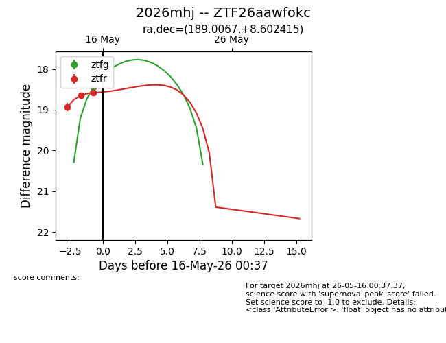
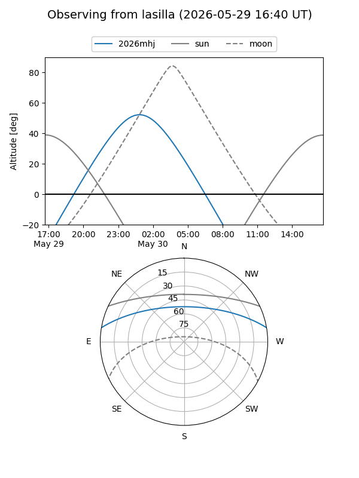
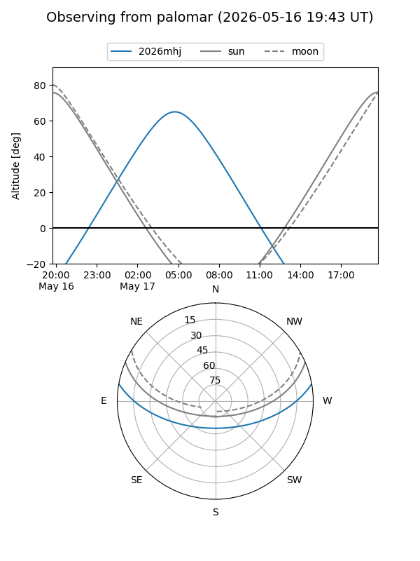
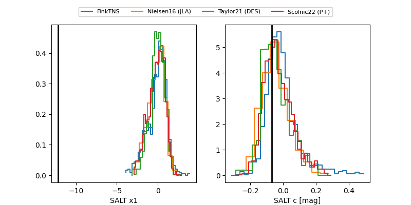

2026mhj
Target 2026mhj at 2026-05-16 00:39
Aliases and brokers:
FINK: link
Lasair: link
ALeRCE: link
TNS: link
YSE: link
alt names
ZTF26aawfokc (ztf,fink_ztf)
2026mhj (tns,yse)
Coordinates:
equatorial (ra, dec) = 189.0067,+8.60241
equatorial (HMS+DMS) = 12:36:01.61,+08:36:08.69
galactic (l, b) = (291.0848,+71.11882)
Flags:
Photometry:
last ztfg=18.45, ztfr=18.58
1 ztfg, 3 ztfr detections
Lightcurve

Visibility


Additional plots
